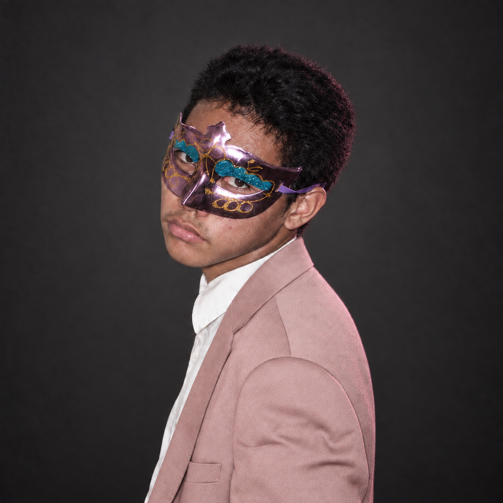

Junior Computer Engineer at Cebu Institute of Technology – University. I design and build end-to-end applications, real-time IoT hardware protocols, and custom system architectures—always paired with gentle, tactile, and human-first interfaces.

Computer Engineer & Full-Stack Developer
When I'm not writing code or testing circuits, I'm on the bike or on the mountain. Long climbs teach you patience; fast descents demand total focus.
Frequent stomping grounds across Cebu—from technical ascents up Busay and Manipis to coastal recovery rides:
Trekking through riverbeds, steep scrambles, and ridge trails that forge stamina and perspective:
"Climbing a mountain and debugging an elusive kernel or socket bug feel remarkably identical: keep pedaling, respect the elevation, and reach the summit."
Directly inspected from my daily battle station. Powerful multi-core compute for training models, compiling C/.NET binaries, and running local IoT test harnesses.
Technology is sterile without taste. These are the comforts, colors, and human rituals that anchor my creative work.
Developer portfolios are often flooded with harsh matrix greens, stark dark modes, or stiff corporate templates. Soft pink represents calm intention, empathy for the person using the screen, and the audacity to be gentle while building hardcore systems.
The staples that keep the brain sharp during long debugging marathons:
* Sinigang broth acidity level calibrated for maximum coding focus.
"I listen almost all the time. To music that sets my mental cadence, to the quiet hum of the laptop fan during a compile, to feedback from teammates, and most importantly, to what people actually need before writing a line of code."
2000s Emo & Pop-Punk, Keshi, J-Pop/YOASOBI, Bisaya Rap (Cookie$), City Pop, and Golden-Era K-Pop.
Whether you have a wild full-stack idea, an IoT hardware challenge, or want to talk cycling routes in Cebu and early 2000s emo music—my inbox is always open.
Tagline goes here